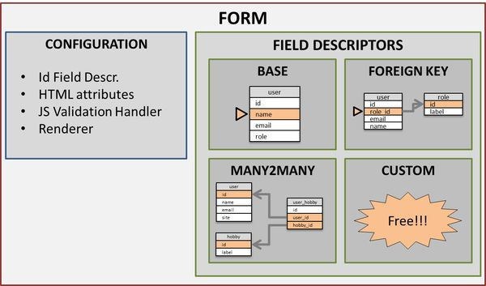
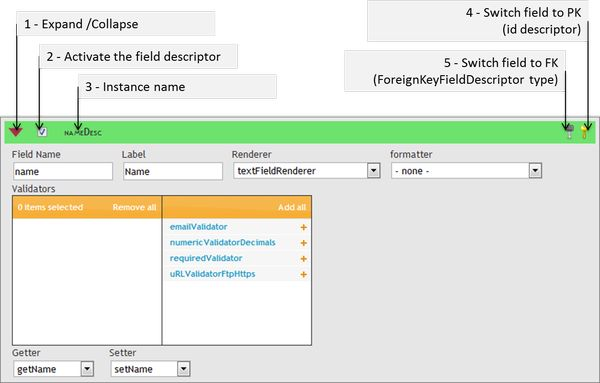
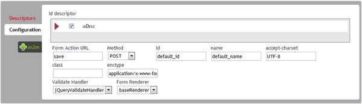

Detailed presentation and configuration of BCE
We will start over from the last step of the "quickstart" presentation, and see how to get a nice userForm. But before you need to get a quick description of BCEForm's structure, and the main objects that it contains.
Detailed description
Structure

Main Classes
-
BCE Form
The main object representing a form: it embedds two categories of objects/values: the field descriptors and the rest that is mainly the configuration part of the form. As you will see just after, FieldDescriptor are responsible for handling a field of the edited Bean (a User in this case). The configuration part defines how the form should behave (rendering, attributes as POST/GET method, action, id, etc...), and it also includes one special Field Descriptor: the idFieldDescriptor that handled the "identifier" field that has special rules.
- The FieldDescriptors
These instances describe how a field should be loaded, displayed, validated and persisted. Depending on the field's data, and relations, there may be different Types of Field Descriptors:
-
- Base Field Descriptor
This type is made for handdling simple fields of a table, that are written directly into the table without any relationship. In our example (as defined in the quickstart) this corresponds to user's name, email, birtdate, etc...
Properties
- Field Name: the name of the field as it will appear in the POST values. Therefore, it is a unique idenfier of the field inside the Form
- Label: the label of the field in the form
- Renderer: handles the display of the field
- Formatter: may be used in order to format the value retrived from DB before displaying it. Also, the formatter may implement an unformat method that will do the opposite (the formatter has to implement the BijectiveFormatterInterface)
- Validators: a list of instances that are responsible of validating the values in the Form. They always implement a server side validation method, and often a client side (JS) validation script (the validator has to implement the JSValidatorInterface)
- Getter: the function of the bean that will return the value for the field
- Setter: the function of the bean that will set the value into the field
- ForeignKey Field Descriptor
As the name tells it, this type is dedicated for handling one-to-many relationships, as our user's role_id foreign key.
Specific Properties (in addition to the Base Field Descriptor)
- Linked DAO: the DAO that will be used to retrieve the linked beans (in our example, the Role DAO that will get the role beans to feed the Role SelectBox)
- Linked Id Getter: the function of the linked bean (ex/ RoleBean) that will return the id of the linked bean, that will be the value of the option
- Linked Label Getter: the function of the linked bean (ex/ RoleBean) that will return the label of the linked bean, that will be the text of the option
- Data Method: the function of the linked DAO that will return a list of beans
- ManyToMany Field Descriptor
This third type of descriptor handles, of course, many-to-many relationships, as our user's hobbies
Specific Properties (Many To Many descriptor do not have "getter" nor "setter" properties because no field is involved in the main table / bean)
- Mapping DAO The DAO that handles the mapping table (the relation table, in our example, the UserHobby DAO)
- Mapping Id Getter The function that will get the primary key of the mapping table (ex: user_hobby.id)
- Mapping Left Key Setter The function that will set the left key (ex: user_hobby.user_id)
- Mapping Right Key Setter The function that will set the right key (ex: user_hobby.hobby_id)
- Mapping Right Key Getter The function that will get the right key
- Bean Values Method The function that will load the beans of the mapping table that correspond to the main bean (ex: all UserHobby beans where userId is the current edited UserBean)
- Linked DAO, Linked Id Getter, Linked Label Getter, Data Method see above, ForeingKey Field Descriptor's fields
- Custom Field Descriptor
Because there is always some specific needs that need to be implemented, you may code any Field Descriptor you want by implementing the BCEFieldDescriptor Interface.
- The Configuration
- Id Field Decriptor
This is a base descriptor that handles the identifier of the table. It is automatically detected if the PrimaryKey is defined for this table, and it is required for the Form to work properly
- HTML attributes
The list of attributes to be found in the Form Tag (id, name, action, method, enctype, etc...)
- JS Validation Handler
The JS library that will handle the client side validation : the validation functions are embedded in the validators, but the JS validation handler is responsible for aggregating the scripts, and diplaying the messages.
- Renderer
Instance that will import the CSS files, and build the Form's DOM, by taking the Form as input.
Using the configuration interface
Global Overview
Let's follow our example case: we just saved our form. The configuration interface is composed of 2 main tabs that allow the user to:
- configure all existing or suggested field descriptors
- configure the form itself

The Field Descriptor widget

The widget is composed of a title bar that allows to sort, and expand/collapse the detailed view of the descriptor.
- For confort, only one detail panel will be shown at once.
- The "Activate checkbox" will define if the fieldDescriptor should be added to the form. If the field descriptor is a suggested one (in green), then it will be created.
- The Title bar shows the name of the field descriptor instance.
- The "switch to PK" button is shown whenever no id field descriptor is set nor has been suggested (may occur for example if no PK is defined for the table, and if the form is being created). It will switch any base field descriptor into the configuration tab, as the id descriptor for the form. This action can be undone, when the button is clicked, it becomes an unset PK button.
- The switch to FK button will transform a base field descriptor widget into a ForeignKeyFieldDescriptor widget. This action can be undone as the swicth PK one
When the widget is expanded, you can see the descriptors' details. The properties you can manipulate obviously depend on the class of the decriptor instance's (see Properties description of Field Descriptors)
The Configuration Tab
There is a second tab called "configuration", that allows you to define the specific Id FieldDescriptor, and some other form related attributes (renderer to be used, id, name, action, etc...)
